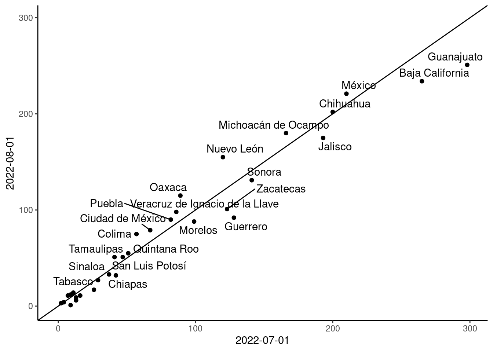

library(tidyverse)
library(sf)
library(ggrepel)Diagrama de dispersión
Siguiendo con la idea de ayudar al usuario a poder identificar cómo han ido variando los delitos en el tiempo, ahora vamos a hacer un diagrama de dispersión (scatterplot) en el que vamos a comparar los delitos de los últmos dos meses en la base de datos (julio y agosto de 2022) para un delito en específico.
Una vez más, empezamos por cargar los paquetes que vamos a usar:
Ahora podemos leer y explorar la base de donde vamos a sacar esta gráfica.
base_mapa <- read_rds("01_input/Mapa_scatter_delitos_prioritarios.rds")
Encoding(base_mapa$subtipo_de_delito) <- "latin1"
Encoding(base_mapa$entidad) <- "latin1"
head(base_mapa)| fecha | subtipo_de_delito | clave_ent | entidad | Total | CVEGEO | NOMGEO | geometry |
|---|---|---|---|---|---|---|---|
| 2022-07-01 | Robo a casa habitación | 01 | Aguascalientes | 164 | 01 | Aguascalientes | MULTIPOLYGON (((-102.2879 2… |
| 2022-07-01 | Robo a casa habitación | 02 | Baja California | 294 | 02 | Baja California | MULTIPOLYGON (((-112.3007 2… |
| 2022-07-01 | Robo a casa habitación | 03 | Baja California Sur | 120 | 03 | Baja California Sur | MULTIPOLYGON (((-109.8945 2… |
| 2022-07-01 | Robo a casa habitación | 04 | Campeche | 120 | 04 | Campeche | MULTIPOLYGON (((-91.9565 20… |
| 2022-07-01 | Robo a casa habitación | 05 | Coahuila de Zaragoza | 140 | 05 | Coahuila de Zaragoza | MULTIPOLYGON (((-102.3108 2… |
| 2022-07-01 | Robo a casa habitación | 06 | Colima | 123 | 06 | Colima | MULTIPOLYGON (((-114.7373 1… |
Note
¡Esta base de datos contiene geometrías! La columna geometry contiene las coordenadas del polígono de cada estado. En esta gráfica no las vamos a usar, pero más adelante sí, para hacer un mapa.
Esta base es muy similar a la que usamos en la serie de tiempo, sólo que viene desagregada por entidad de la república, entonces tenemos una serie de tiempo para cada estado.
El diagrama de dispersión que vamos a hacer compara un mes con el mes anterior, para ayudar al usuario en la comparación, vamos a agregar una diagonal que representa el caso en el que no hubo cambios entre los meses. Para agregar esta diagonal, necesitamos calcular el máximo para el delito seleccionado por el usuario:
eje <- base_mapa %>%
filter(subtipo_de_delito=="Homicidio doloso") %>%
filter(Total==max(Total))
eje| fecha | subtipo_de_delito | clave_ent | entidad | Total | CVEGEO | NOMGEO | geometry |
|---|---|---|---|---|---|---|---|
| 2022-07-01 | Homicidio doloso | 11 | Guanajuato | 298 | 11 | Guanajuato | MULTIPOLYGON (((-101.35 21…. |
Note
En una aplicación ideal, el usuario debería poder escoger las fechas que se usan para la comparación. Por las limitaciones de tiempo de este taller, vamos a fijar estas dos fechas.
Ya con este valor calculado, vamos primero a procesar los datos para hacer nuestra gráfica. Queremos, en lugar de la serie de tiempo, un DataFrame que tenga las entidades en las filas y dos columnas con los valores que corresponden a las fechas que queremos comparar. Para eso, lo que tenemos que hacer es pivotear las tablas y pasar las fechas (que están en renglones) a columnas:
base_mapa %>%
filter(subtipo_de_delito=="Homicidio doloso") %>%
st_drop_geometry() %>%
pivot_wider(id_cols = c('clave_ent','entidad'),
names_from = 'fecha',
values_from = 'Total')| clave_ent | entidad | 2022-07-01 | 2022-08-01 |
|---|---|---|---|
| 01 | Aguascalientes | 7 | 11 |
| 02 | Baja California | 265 | 234 |
| 03 | Baja California Sur | 2 | 3 |
| 04 | Campeche | 9 | 1 |
| 05 | Coahuila de Zaragoza | 13 | 6 |
| 06 | Colima | 57 | 75 |
| 07 | Chiapas | 42 | 32 |
| 08 | Chihuahua | 200 | 202 |
| 09 | Ciudad de México | 67 | 79 |
| 10 | Durango | 11 | 14 |
| 11 | Guanajuato | 298 | 251 |
| 12 | Guerrero | 128 | 92 |
| 13 | Hidalgo | 26 | 17 |
| 14 | Jalisco | 193 | 175 |
| 15 | México | 210 | 221 |
| 16 | Michoacán de Ocampo | 166 | 180 |
| 17 | Morelos | 99 | 88 |
| 18 | Nayarit | 13 | 9 |
| 19 | Nuevo León | 120 | 155 |
| 20 | Oaxaca | 89 | 115 |
| 21 | Puebla | 82 | 90 |
| 22 | Querétaro | 16 | 11 |
| 23 | Quintana Roo | 51 | 55 |
| 24 | San Luis Potosí | 47 | 51 |
| 25 | Sinaloa | 37 | 33 |
| 26 | Sonora | 141 | 131 |
| 27 | Tabasco | 29 | 27 |
| 28 | Tamaulipas | 41 | 51 |
| 29 | Tlaxcala | 9 | 12 |
| 30 | Veracruz de Ignacio de la Llave | 86 | 98 |
| 31 | Yucatán | 4 | 4 |
| 32 | Zacatecas | 123 | 101 |
Warning
Fíjense en la llamada a st_drop_geometry(). Esta función le quita la geometría a nuestros datos, de otra forma no podríamos pivotear la tabla
Ahora sí, ya con los datos bien acomodados, podemos hacer la gráfica que queremos:
base_mapa %>%
filter(subtipo_de_delito=="Homicidio doloso") %>%
st_drop_geometry() %>%
pivot_wider(id_cols = c('clave_ent','entidad'),
names_from = 'fecha',
values_from = 'Total') %>%
ggplot(aes(`2022-07-01`,`2022-08-01`))+
geom_point()+
scale_y_continuous(limits = c(0,eje$Total))+
scale_x_continuous(limits = c(0,eje$Total))+
geom_abline()+
theme_classic()+
ggrepel::geom_text_repel(aes(label=entidad)) Warning: ggrepel: 10 unlabeled data points (too many overlaps). Consider
increasing max.overlaps
Todos los puntos que quedan por debajo de la diagonal nos indican una disminución en el último mes, mientras que por encima nos indican un aumento.